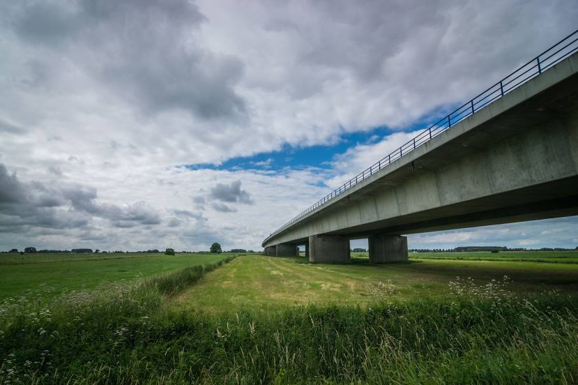
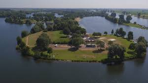
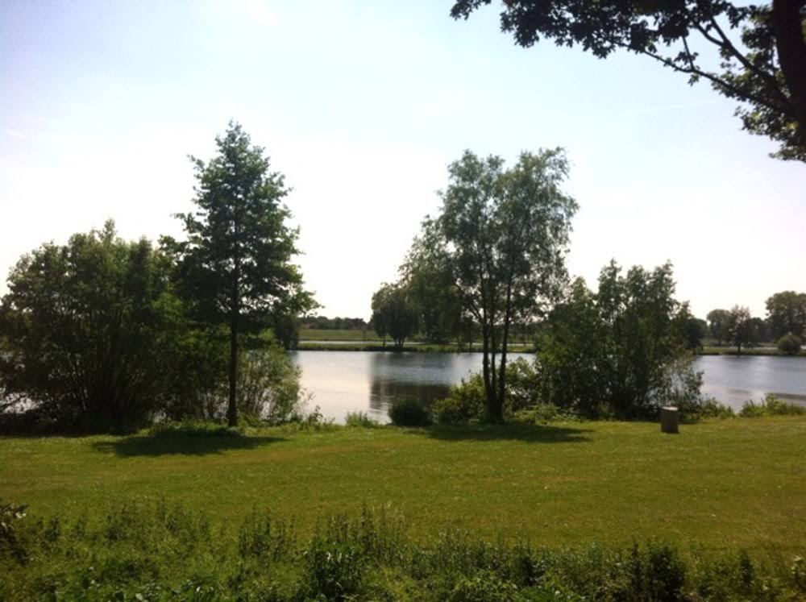
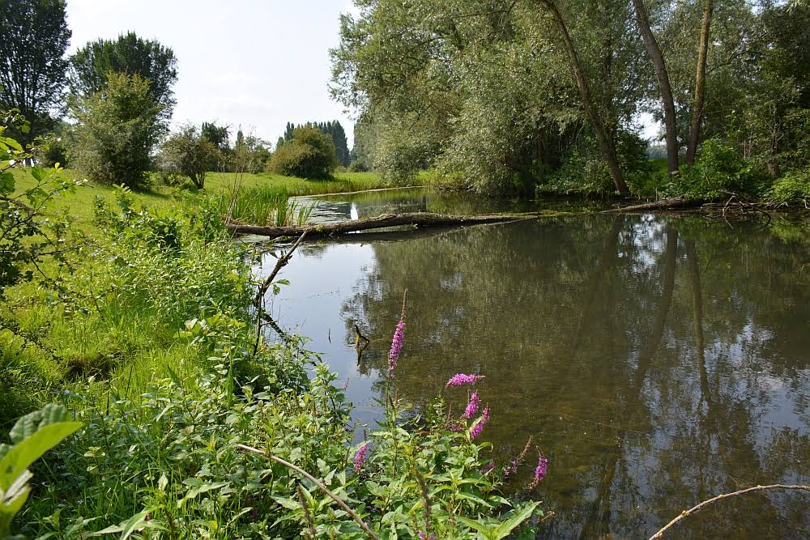
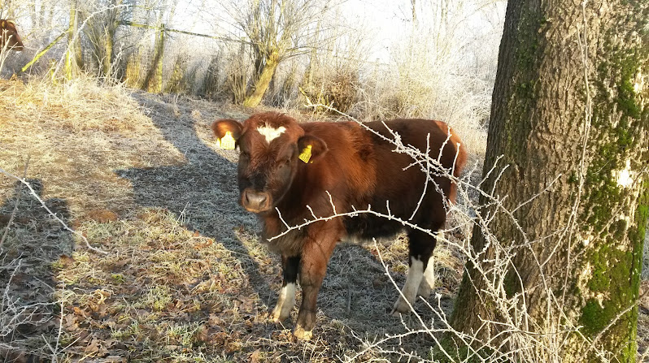
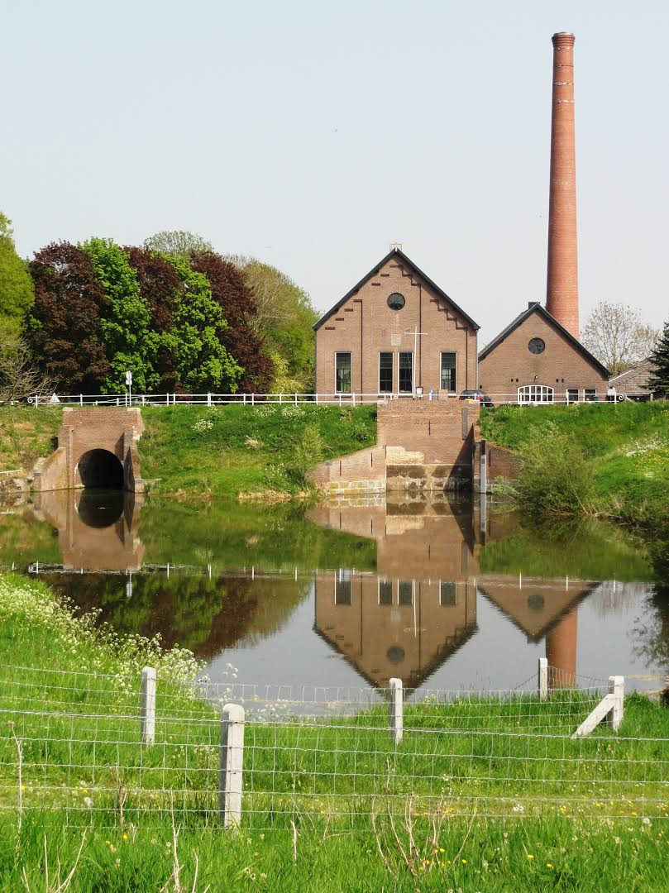
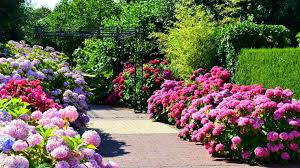
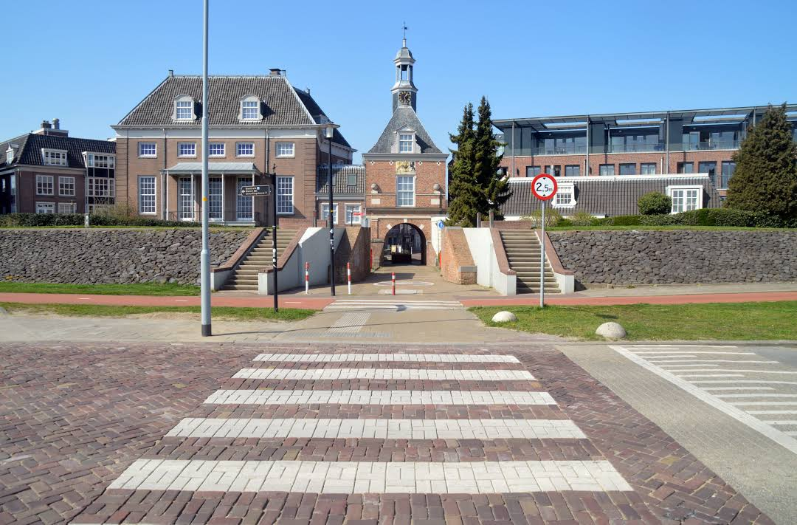
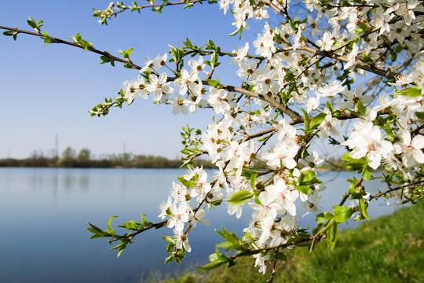

- Dreumel ligt in het land van Maas en Waal
- Het dorp heeft 3520 inwoners (01-01-2021)
- Nabij Dreumel ligt het Driedijkenpunt. In 1781 vond een dijkdoorbraak plaats nabij Dreumel.
- Op 1 januari 1984 werd de gemeente Dreumel opgeheven en bij de gemeente Wamel gevoegd.
- Je kunt in Dreumel eindeloos wandelen en fietsen de natuur is hier prachtig.
De Prins Willem-Alexanderbrug is een tuibrug over de Waal tussen Echteld en Wamel / Beneden-Leeuwen op Rkm 910,8.De N323 verbindt het Land van Maas en Waal met de A15 en de Betuwe.
De Gouden Ham ligt tussen de dorpskernen van Appeltern en Maasbommel. Het totale gebied bestaat grotendeels uit water met een open verbinding naar de Maas.
Strand Maaslanden is een toplocatie gelegen op de kop van het schiereiland van waterrecreatiegebied De Gouden Ham.
Deze bewegwijzerde struinroute gaat door het oostelijk deel van de Gouden Ham; de Moringerwaarden. Het is een uniek natuur- en wandelgebied.
 De Moringerwaard. Dit is het gebied tussen de toegangsweg naar het Groene Eiland en het Rivierhuis.Het is een unieke natuur- en wandelomgeving.
Stoomgemaal de Tuut is een museum dat een technisch en maatschappelijk doorkijkje geeft naar het begin van de 20e eeuw.
De Tuinen van Appeltern zijn een Nederlands complex van modeltuinen dat zich sinds 1988 bevindt in de Gelderse plaats Appeltern, nabij Nijmegen en Tiel in het Land van Maas en Waal.
De Waterpoort in de Nederlandse stad Tiel is in 1647 gebouwd. Tiel was indertijd een versterkte stad met stadsmuren, grachten en vier poorten.
Het Lingemeer is een recreatieplas van 80 ha aan de noordzijde van de Betuwse rivier de Linge. De plas ligt tussen Tiel en Rhenen zuidwestelijk van Lienden en grenst aan de A15.